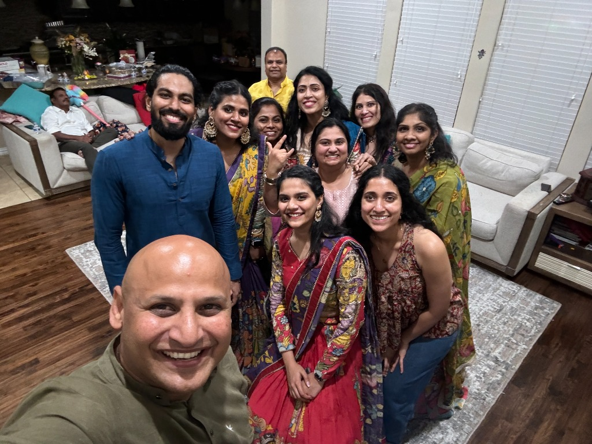
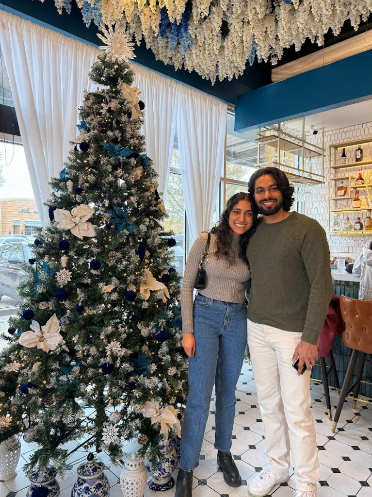
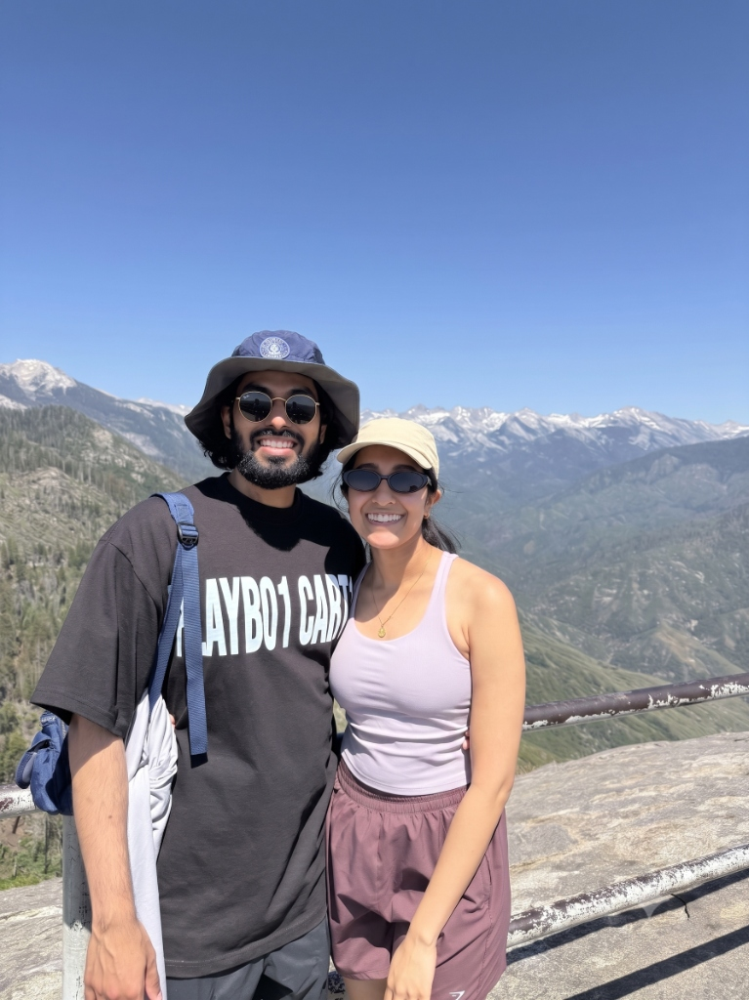
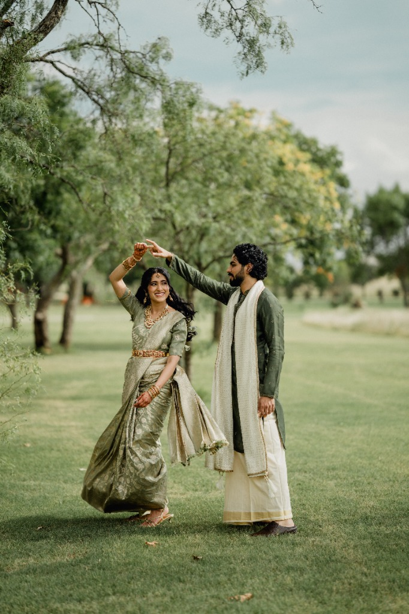
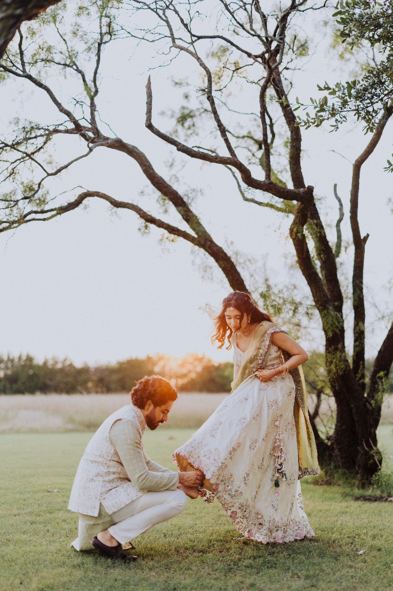
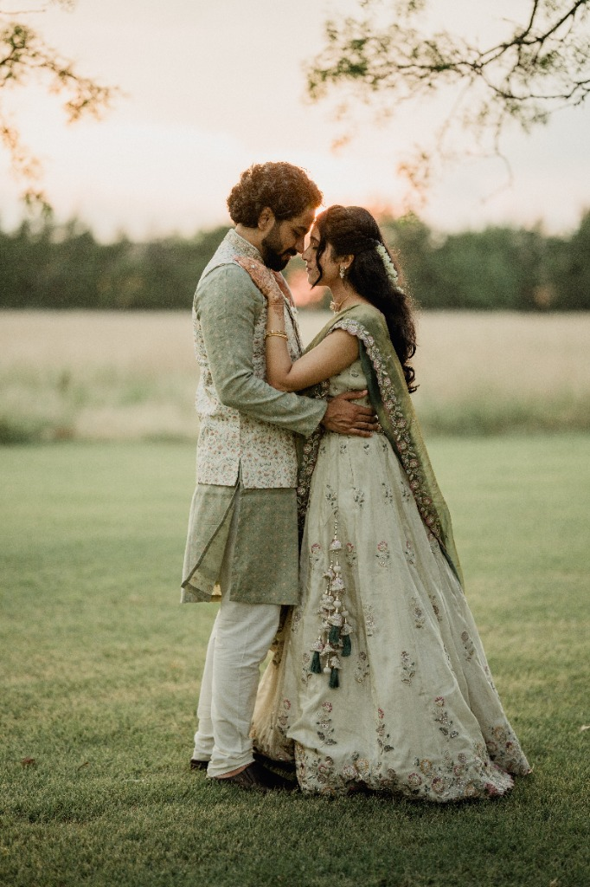

November · 2024
The First Hello
Sharvari and Nikhil’s paths crossed at a Diwali party in Dallas. While Sharvari lived locally, Nikhil was visiting from Boston. They ended up sitting together, chatting away, and dancing for hours with family and friends. When a bit of family teasing started, they immediately teamed up and had each other's backs!
They actually left the party without exchanging numbers, which led to a funny search the next morning. While Sharvari was scrolling through LinkedIn, Nikhil was frantically trying to figure out how to spell her name online! Luckily, the algorithm worked in their favor—they opened a matchmaking app the next day, and their profiles popped up for each other. They reconnected instantly and started FaceTiming every day.
December · 2024
When They Knew
After a month of endless FaceTimes and texts, they reunited back in Dallas. A quick airport pickup and coffee date quickly turned into an impromptu family introduction when they stopped by a cousin's house—complete with next-door neighbors who already knew Sharvari's parents!
Though it was only their second time seeing each other in person, it felt incredibly natural. It was a little overwhelming but they were so happy to be there. They spent the whole weekend together, meeting siblings and friends, and by the time the weekend ended, they both just knew this was it.


January · July 2025
Life in Two Cities
From there, their relationship became a beautiful rhythm of traveling back and forth between Dallas and Boston. They made sure to make every visit count—they explored the best of Boston (where Sharvari quickly fell in love with local cannolis), cheered at basketball games, and took weekend trips to NYC for Broadway shows and California for quick getaways.
More importantly, this was the time when their two worlds truly came together. They spent their weekends introducing each other to their closest friends, catching up with extended family, and setting up FaceTime calls for their parents to connect. By the time their parents finally met in person, their families and friends were already a favorite part of their shared journey.
August · 2025
She Said Yes!
Nikhil's proposal was a total surprise, though it almost didn’t happen after a last-minute canceled flight! After a stealthy arrival in Dallas with phone locations spoofed to stay hidden, his trap was set. The cover story was perfect: a simple trip out to a sunflower patch for some family photos.
Instead, the car made a sudden U-turn to a different spot. As soon as Sharvari spotted a few friends hiding, the secret was out! A violinist was playing their favorite songs, and friends walked out holding bouquets right before Nikhil popped the big question. A few weeks later, they celebrated their formal engagement ceremony with their families and friends with a weekend of dancing, food, and festivities. Now, they are officially counting down to Kochi!
Photo Gallery · Some of our favorite clicks



Standard Photo
Portrait Photo
Standard Photo
Square/Landscape
Portrait Photo
Standard Photo